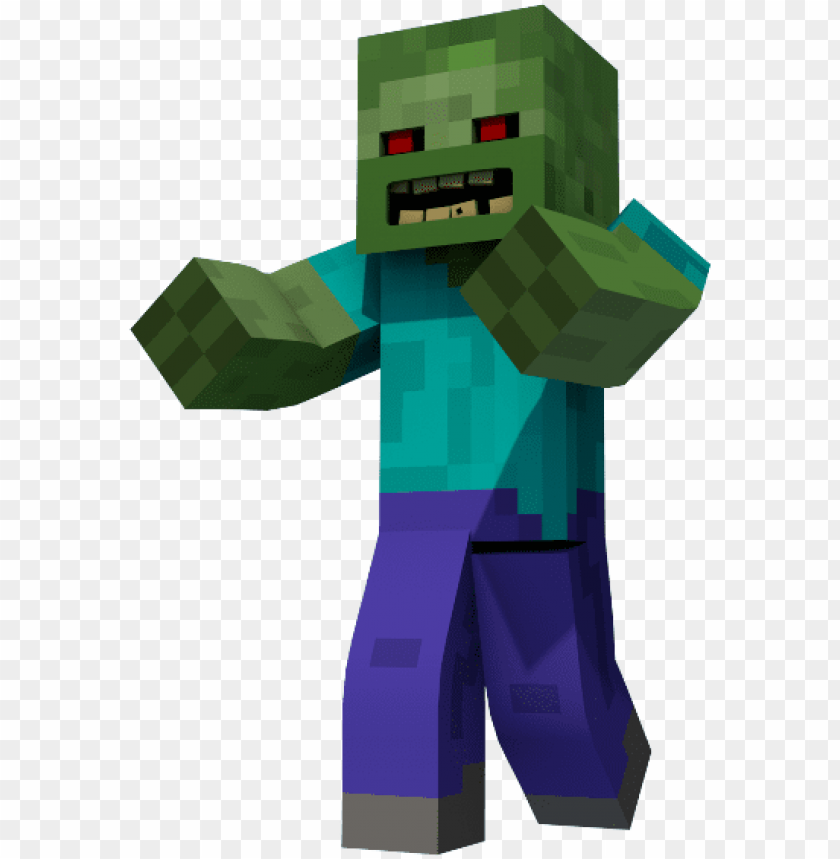
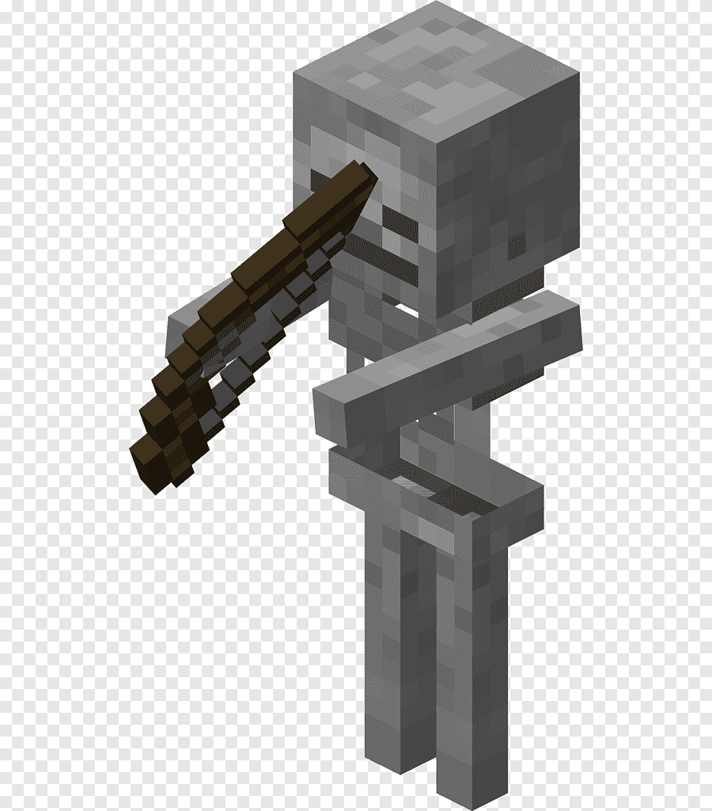

No Minecraft, existem vários tipos de criaturas perigosas que aparecem, principalmente à noite ou em locais escuros.
Um dos monstros mais comuns. Aparece à noite e persegue o jogador lentamente.
Ataca de longe com arco e flecha. Também aparece no escuro.
É o chefe final do jogo. Vive na dimensão The End e é um desafio enorme derrotá-lo.